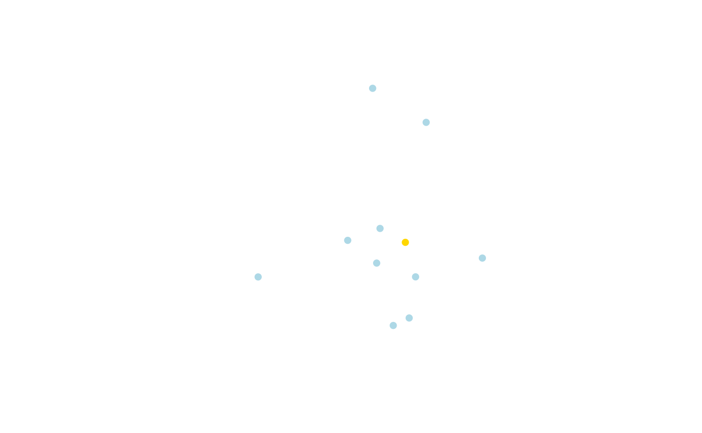
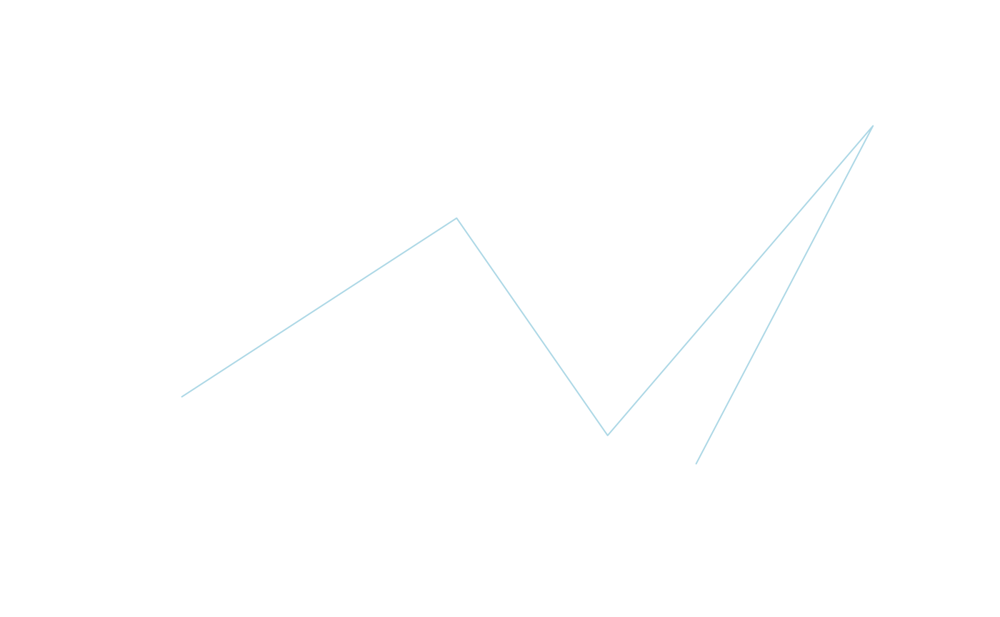

Geometry Objects
geometry_objects.RmdGeometry Creation
Points
pt <- st_point(c(0,0))
loc <- matrix(rnorm(20), ncol = 2)
pts <- st_multipoint(loc)
plot(pts,col = "lightblue", pch = 16)
plot(pt,col = "gold", pch = 16, add = TRUE)
Lines
pts <- rbind(c(-1,-1),c(1,1))
ln <- st_linestring(pts)
plot(ln,col = "lightblue", pch = 16)
pts = matrix(rnorm(10), ncol = 2)
lns = st_linestring(pts)
plot(lns,col = "lightblue", pch = 16)
Polygons
box1 = rbind(c(-1,-1), c(1,-1), c(1,1), c(-1,1), c(-1,-1))
box2 = rbind(c(-1.5,0), c(0,1.5), c(1.5,0), c(0,-1.5), c(-1.5,0))
pl = st_polygon(list(box1, box2))
plot(pl)
pls = st_multipolygon(list(list(box1), list(box2)))
plot(pls)
Geometry Collections
gc <- st_geometrycollection(list(pt, ln, lns))
plot(gc)Geometric Operations
Intersection Lines
l1 <- st_linestring(box1)
l2 <- st_linestring(box2)
pnts <- st_intersection(l1, l2)
plot(l2)
plot(l1, add = T)
plot(pnts, add = T, col = "red", pch = 21)Conver Hull
Makes a hull around the multilinestring and turns into a polygon.
ml_sf = st_sf(geom = st_sfc(st_multilinestring(list(box1, box2))))
st_ch = st_convex_hull(ml_sf)
plot(st_ch,col = "lightblue")
plot(ml_sf, add = T, col = "gold")Extract Bordering Points
Extracts the bordering points a boundary around the multilinestring and turns into a polygon.
st_bd <- st_boundary(st_ch)
plot(st_ch, col = "lightblue")
plot(st_cast(st_bd,"POINT"),col = "red", add = T)Union
pl1 = st_polygon(list(box1))
pl2 = st_polygon(list(box2))
plun <- st_union(pl1, pl2)
plot(plun, col = "lightblue", main = "Union")Intersection
plot(st_intersection(pl1, pl2),col = "lightblue", main = "Intersection")Difference
pldif <- st_difference(pl1, pl2)
plot(pldif,col = "lightblue", main = "Difference")Symmetric Difference
symDif <- st_sym_difference(pl1, pl2)
plot(symDif,col = "lightblue", main = "Symmetric Difference")contains
pl3 = pl2*0.5 + 0.2
st_contains(pl2,pl3)
Sparse geometry binary predicate list of length 1, where the predicate
was `contains'
1: 1
plot(pl2, col = "lightblue")
plot(pl3, add = T,col = "gold")
np <- st_nearest_points(pl3,pldif)
plot(pldif,col = "lightblue")
plot(pl3, add = T,col = "gold")
plot(np, add = T,col = "red")st_distance(pl3,pldif)
[,1]
[1,] 0.2474874
plbd <- st_boundary(plun)
plot(plbd, col = "lightblue",lwd = 20)
plot(plun, add = T,col = "gold")
rot = function(a) matrix(c(cos(a), sin(a), -sin(a), cos(a)), 2, 2)
cntrd = st_centroid(plun)
plrot = (plun - cntrd) * rot(pi/6) + cntrd
plot(plun, border = 'lightblue')
plot(plrot, add = TRUE,border = "gold")